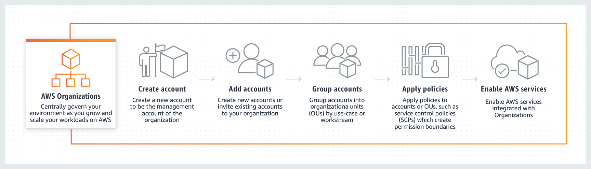

Beschreibung
AWS Organizations ist eine leistungsstarke Plattform, die Unternehmen dabei unterstützt, ihre AWS-Konten zentralisiert zu verwalten und eine effektive Steuerung ihres AWS-Umfelds zu gewährleisten. Diese Lösung bietet eine Reihe von Funktionen und Möglichkeiten, um die Verwaltung und Kontrolle über die AWS-Ressourcen zu optimieren.
Eine herausragende Funktion von AWS Organizations besteht darin, reservierte EC2-Instanzen freizugeben, was Unternehmen ermöglicht, ihre Ressourcennutzung zu optimieren und Kosten zu senken. Durch diese Funktion können Unternehmen ungenutzte oder überdimensionierte Ressourcen identifizieren und entsprechend anpassen, um ihre Budgets effizienter zu nutzen.
Ein weiterer wichtiger Aspekt von AWS Organizations ist die umfassende Kontrolle über verschiedene Aspekte der AWS-Umgebung, einschließlich Abrechnung, Zugriff, Compliance und Sicherheit. Organisationen können Dienstkontrollrichtlinien (Service Control Policies) definieren, um granulare Zugriffskontrollen festzulegen und sicherzustellen, dass Compliance-Anforderungen eingehalten werden. Dies ermöglicht es Organisationen, Sicherheitsrichtlinien konsistent durchzusetzen und potenzielle Risiken zu minimieren.
AWS Organizations bietet auch eine einfache und benutzerfreundliche Möglichkeit, die AWS-Kontenstruktur zu organisieren und zu verwalten. Unternehmen können Unterkonten erstellen, um Ressourcen entsprechend ihren Geschäftsanforderungen und Organisationsstrukturen zu gruppieren und zu organisieren.
Darüber hinaus ist AWS Organizations für alle AWS-Kunden kostenlos verfügbar, unabhängig von der Unternehmensgröße oder dem Umfang der AWS-Nutzung. Diese Kostenfreiheit ermöglicht es Unternehmen jeder Größe, von den Vorteilen der zentralen Kontoverwaltung und der verbesserten Sicherheit zu profitieren, ohne zusätzliche finanzielle Belastungen zu verursachen.
Insgesamt bietet AWS Organizations eine umfassende Lösung für die zentrale Verwaltung und Steuerung von AWS-Konten und -Ressourcen, wodurch Unternehmen eine höhere Effizienz, Kontrolle und Sicherheit in ihrer AWS-Umgebung erreichen können.
* AWS Organizations: Zentrale Verwaltung von AWS-Konten
* Freigabe von reservierten EC2-Instanzen zur Ressourcenoptimierung und Kostenkontrolle
* Kontrolle über Abrechnung, Zugriff, Compliance und Sicherheit
* Definition von Dienstkontrollrichtlinien für granulare Zugriffskontrollen und Compliance
* Organisatorische Strukturierung von AWS-Konten durch Unterkonten
* Kostenloser Service für alle AWS-Kunden
* Effiziente Verwaltung und verbesserte Sicherheit in der AWS-Umgebung
Schlüsselwörter
> > > Schlüsselworte bzw. Schlagworte sollen uns dabei helfen, einen Service leichter zu erkennen, wenn es um Prüfungsfragen geht. Ließ dir die Fragen richtig durch und achte auf folgende Schlüsselworte. Sie können dir bei der Beantwortung der Fragen helfen.
- Container-Orchestrierung: ECS ermöglicht daren von Docker-Containern in der AWS-Cloud.
- Container-Definitionen: Definition von Containber die Verwendung von Aufgaben (Tasks) und Services.
- Docker-Integration: ECS unterstützt Docker-Container und ermöng von Docker-Images.
- Task-Definitionen: Spezifikationen, wie eine Aufgabe (Task) in einvon Services, um langfristig laufende Anwendungetartet und Aufgaben ausgeführt werden.
- Auto Scaling: Automatische Anpassung der Anzahl von las basieinierbaren Metriken.
- Load Balancing: Integration mit dem Elastic Load Balancing-Dienst für die Lr.
- AWS Fargate: Option zur Ausführung von Containern ohne die Notwendigkeit, EC2.
- Integration mit Amazon ECR: Nahtlose Integration mit d
Grafische Erklärung
Prüfung Fragen
- Welche der folgenden Aussagen zum Entfernen eines AWS-Kontos aus AWS-Organisationen ist RICHTIG?
- Ein Einzelhandelsunternehmen hat mehrere AWS-Konten für jede seiner Abteilungen. Welche der folgenden AWS-Services können verwendet werden, um eine konsolidierte Rechnungsstellung und eine einzige Zahlungsmethode für diese AWS-Konten einzurichten?
- Welche der folgenden Vorgehensweisen sind bei der Verwendung von AWS-Organisationen zu empfehlen?